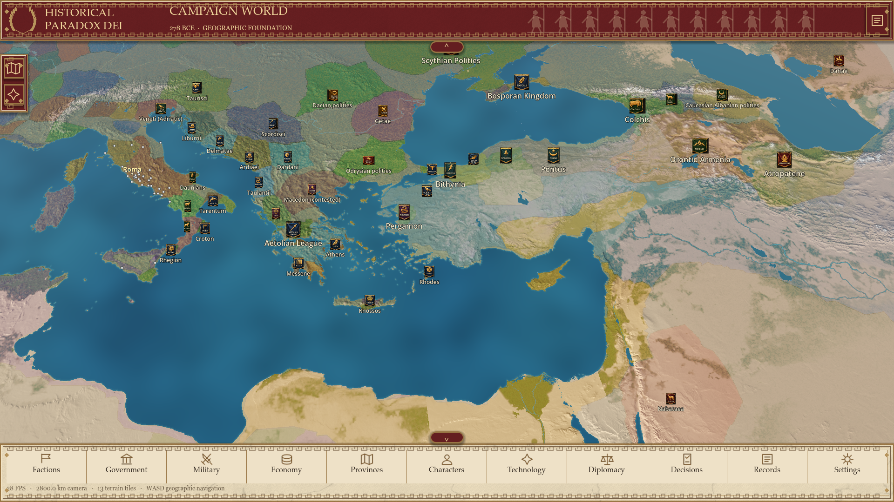
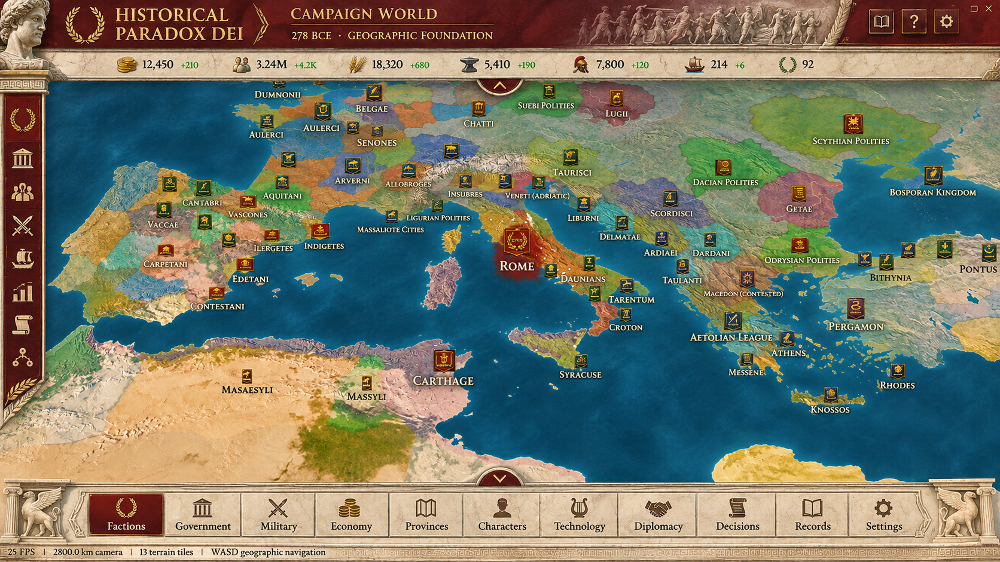

Campaign
Approved art direction

Art reference only. Its resource figures and map are not imported into the game.
Original procedural marble and vector carving replace the earlier dark interface. Sculpted busts and detailed figurative reliefs remain a visual limitation. Implementation, changed files and verification details · Native verification report.